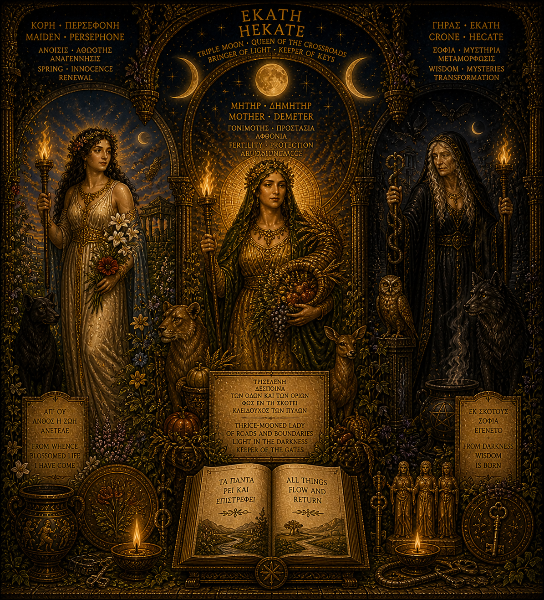

Hecate
Queen of the Crossroads, Keeper of Keys
Key Inscriptions
All things flow and return.
— Image inscription
Thrice-mooned Lady of roads and boundaries, light in the darkness, keeper of the gates.
— Image inscription
From whence all stored life have come.
— Image inscription
From darkness wisdom is born.
— Image inscription
Archetypal Function
Hecate is the archetype of threshold wisdom — the intelligence that dwells at crossroads, that knows what belongs to night, that can move between the worlds without being consumed by any of them. She is the feminine principle of the dark, not as threat but as ground: she holds the space that the solar figures cannot enter and survive without a guide.
In this constellation, Hecate is the dark axis paired with Isis-Sophia. Where Isis-Sophia holds the luminous feminine — the divine mother, the wisdom that builds — Hecate holds the liminal feminine: the crone, the boundary, the knowledge born at the edge. She governs the Oaken Pilgrim's night passages, guides the descent that any serious inner work requires, and keeps the gates that must not be forced. She is the figure this constellation needs most when it is in the dark.
The Shadow Forms
The shadow of Hecate is the dark that becomes enclosure. The crossroads where no path is taken, the threshold wisdom that never commits to crossing, the crone figure who knows but will not teach. Unintegrated, Hecate's boundary-keeping becomes entrapment — a psychic space that knows all exits but inhabits none of them.
There is also the shadow of dark knowledge weaponised: the one who uses liminal awareness to manipulate, who knows the night's secrets and will not share them freely. Hecate's shadow hoards threshold knowledge, becoming the gatekeeper who denies rather than guards. The witch who curses rather than guides.
Integration
Hecate integrated is the figure who can stand at the crossroads without anxiety. She knows that night is not the absence of meaning but its other face — that the things which grow in the dark are not lesser than the things that grow in light, only different. She grants the Oaken Pilgrim permission to be present at thresholds without having to resolve them.
For this constellation, Hecate provides the capacity to endure not-knowing as a practice rather than a failure. She holds open the space between the old self and the new, the dying and the not-yet-born. She is why this constellation does not collapse into premature resolution — someone is tending the liminal space, keeping the gates open long enough for transformation to complete itself.
Symbolic Vocabulary
Twin Torches
Light held in both hands at the crossroads — illuminating all directions equally. Hecate's torches do not privilege one path; they reveal the choice. Her light is the light of discernment, not direction.
The Triple Form
Maiden, Mother, Crone — three ages that are not sequential but simultaneous. Hecate contains all three. She is the triple nature of time made divine: inception, fullness, and ending held as a single figure.
The Keys
Authority over thresholds — what is locked, what is opened, what is permitted to pass. The keys of Hecate are not power over others but over the gates themselves: she knows which doors exist and where they lead.
The Serpent
Chthonic wisdom: knowledge that comes from below, from the root systems of things, from what is too old to remember but too alive to forget. The serpent sheds its skin — transformation without death.
Within the Constellation
Most closely related to: